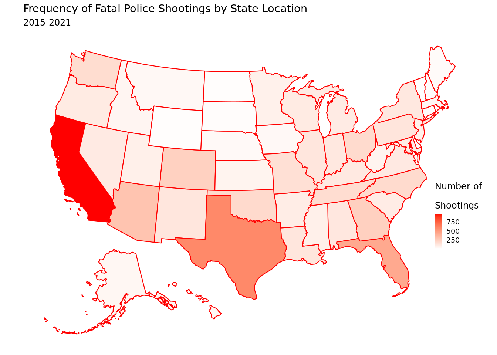
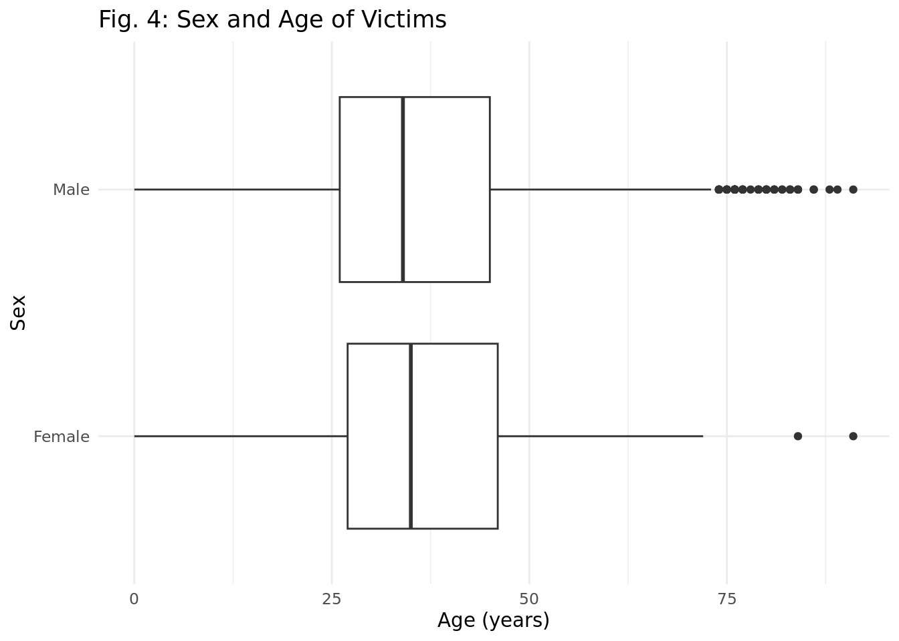
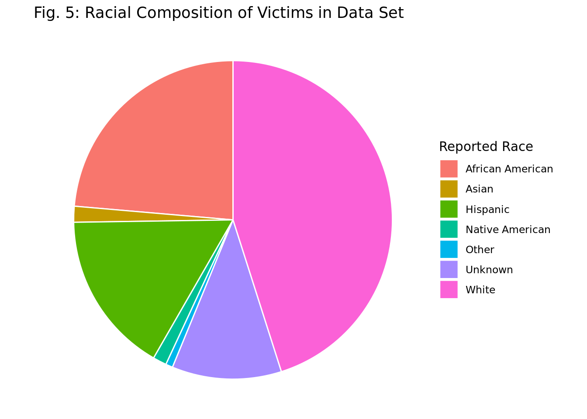
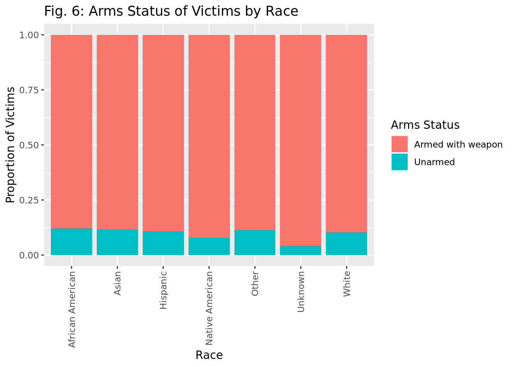

An Analysis of Police Shootings in the United States from 2015-2021
Report
Introduction
Created on September 15, 2021, the police_shootings data set is sourced from the CORGIS Dataset Project and was compiled from findings by The Washington Post. The Washington Post regularly collects this data as police shootings happen by monitoring local news reports, law enforcement websites, social media, and other independent databases such as Killed by Police and Fatal Encounters. When necessary, The Post also did additional research to investigate each individual case.
This data set describes fatal shootings by a police officer in the line of duty in the United States from January 1, 2015, to September 11, 2021. Each observation represents a single fatal shooting event by a police officer. This data includes information on the victim’s gender, race, mental illness, location, and date of the event.
In a Nature article titled “What the data say about police shootings,” Lynne Peeples explains that police officers in the United States fatally shoot roughly three people per day — a statistic that rivals the yearly totals of other comparable nations. Data on these tragic encounters is often limited, but in recent years newspapers, enterprising individuals, and the federal government have launched ambitious data-collection projects to fill the gaps and improve transparency and accountability over how police officers exercise their right to use deadly force. Researchers have posed many pressing questions, including whether the police are disproportionately quick to shoot Black and other minority civilians. That said, further exploration and analysis is desperately needed to brings awareness to implicit biases entrenched in the US police force and may suggest ways to build a better future for all citizens.
Research question
How do race, gender, age, and whether a civilian was armed or not affect the perceived threat level of a victim in fatal police shootings across the United States from 2015 to 2021?
Data
Our data set includes 6569 rows (observations), indicating that at least 6569 known people were killed by police from 2015 to 2021. By investigating how different factors affect the number of shootings across demographic groups, we can begin to understand why these tragedies happen and what we can do to stop them from happening going forward. Specifically, our research topic examines police shooting history on the basis of race, gender, and age. We hypothesize that male individuals who identify as a POC are more likely to be perceived as a threat by police during fatal shootings.
Rows: 6,569
Columns: 16
$ Person.Name <chr> "Tim Elliot", "Lewis Lee Lembke", "John Paul …
$ Person.Age <dbl> 53, 47, 23, 32, 39, 18, 22, 35, 34, 47, 25, 3…
$ Person.Gender <chr> "Male", "Male", "Male", "Male", "Male", "Male…
$ Person.Race <chr> "Asian", "White", "Hispanic", "White", "Hispa…
$ Incident.Date.Month <dbl> 1, 1, 1, 1, 1, 1, 1, 1, 1, 1, 1, 1, 1, 1, 1, …
$ Incident.Date.Day <dbl> 2, 2, 3, 4, 4, 4, 5, 6, 6, 6, 6, 7, 7, 7, 7, …
$ Incident.Date.Year <dbl> 2015, 2015, 2015, 2015, 2015, 2015, 2015, 201…
$ Incident.Date.Full <date> 2015-01-02, 2015-01-02, 2015-01-03, 2015-01-…
$ Incident.Location.City <chr> "Shelton", "Aloha", "Wichita", "San Francisco…
$ Incident.Location.State <chr> "WA", "OR", "KS", "CA", "CO", "OK", "AZ", "KS…
$ Factors.Armed <chr> "gun", "gun", "unarmed", "toy weapon", "nail …
$ `Factors.Mental-Illness` <lgl> TRUE, TRUE, TRUE, TRUE, TRUE, TRUE, TRUE, TRU…
$ `Factors.Threat-Level` <chr> "attack", "attack", "other", "attack", "attac…
$ Factors.Fleeing <chr> "Not fleeing", "Not fleeing", "Not fleeing", …
$ Shooting.Manner <chr> "shot", "shot", "shot and Tasered", "shot", "…
$ `Shooting.Body-Camera` <lgl> TRUE, TRUE, TRUE, TRUE, TRUE, TRUE, TRUE, TRU…Ethical Concerns
One ethical concern is the possibility of misinformation in the data and a lack of accurate reporting. Not every police shooting is reported or handled correctly. Although The Washington Post compiled the data from many different sources, this report has no way of verify that the data set is fully comprehensive of every fatal police shooting in the United States.
Second, as demonstrated below, all 6569 victims identified in this data set have been labeled as having a mental illness. As a result, we decide not to make a visualization based on the mental illness variable. Our team believes that mental health is a spectrum with varying characteristics and severity of impact and that reducing mental illness to a simple “TRUE” or “FALSE” characterization would be unethical. Instead, we will focus our report on other variables.
[1] 6569Finally, a third ethical concern is consent and whether the victims’ families want their loved ones to have identifying information (like name and details about their death) in a public database. This is a highly sensitive topic and our team seeks to treat it as such.
For the purposes of this project, we will assume that the following data was collected randomly and that observations are independent.
We have identified several key variables that will advance our research question:
Person.Age - An integer value of the victim’s age
Person.Gender - The victim’s identified gender
Person.Race - The victim’s identified race
Incident.Location.State - The state in which the shooting incident happened
Factors.Armed - Indicates whether the victim was armed
Factors.Threat-Level - The preceived level of threat of the victim according to police (classified as either “attack”, “undetermined”, “other”, or “unknown”)
Methodology
First, our research team conducted exploratory data analyses based on summary statistics. We found that the average age and media age for a police shooting victim in this data set are 35 years old and 34 years old, respectively. Moreover, the standard deviation of the victim’s age is roughly 15 years, indicating that this data set represents a broad sampling of fatal police shootings across age groups.
# A tibble: 1 × 3
mean_age median_age stdv_age
<dbl> <dbl> <dbl>
1 35.4 34 14.9
As evidenced by the map above, the majority of our data was collected in California. This fact could limit our ability to generalize conclusions from our analysis, as California may be overrepresented.
Next, we visualized the number of fatal police shootings per day across the seven years in our data set. We created a new variable days_in_year to that included the number of days in each year studied, accounting for leap years and the end of data collection in September 2021. Next, we chose to generate a line graph to represent the progression of shootings per day over time, as it effectively reveals trends and changes across the years. Overall, the daily shooting rates fluctuate between 2.45 and 2.8 shootings per day, with a slight dip in 2021 that may have been caused by the COVID-19 pandemic.
`geom_smooth()` using formula = 'y ~ x'
As seen by the graph below, ~10% of male victims and 13% of female victims were unarmed.

Next, we used box plots to visualize the age of the victims based on race (Fig. 3) and sex (Fig.4). We chose this method of visualize to clearly compare the median, range, and outliers across demographic groups.


Furthermore, we created a pie chart to visualize the racial composition of the victims represented in our data set. Based on the graphic below, we observed that the three most represented racial groups in this data set are people identified as white, African American, or unknown (to the data collectors).

In addition, we visualized the the proportion of victims that carried weapons or not based on race using a bar graph.

Finally, we fit a logistic regression model to explore which variables best predicted the likelihood of a victim being perceived as a threat by police.
[1] 8485.761# A tibble: 6 × 5
term estimate std.error statistic p.value
<chr> <dbl> <dbl> <dbl> <dbl>
1 (Intercept) -0.229 0.138 -1.66 9.61e- 2
2 raceWhite -0.114 0.0539 -2.12 3.38e- 2
3 Person.GenderMale -0.245 0.123 -1.98 4.74e- 2
4 Person.GenderUnknown 1.04 1.23 0.843 3.99e- 1
5 Factors.Armed.Testunarmed 0.653 0.0835 7.81 5.66e-15
6 Person.Age -0.00419 0.00180 -2.33 1.98e- 2\(\log{\frac{p}{1-p}}\) = -0.229153274 -0.114483595 * (\(race\_white\)) - 0.244889178 * (\(Person.Gender\_Male\)) + 1.038480834 * (\(Person.Gender\_Unknown\)) + 0.652516293 * (\(Factors.Armed.Test\_unarmed\)) - 0.004189227 * (\(Person.Age\))
where \(p\) is the probability of a person being a perceived threat by the police, stating the incident as an “attack”
After fitting the logistic model and computing backwards elimination, we found the best model for our response variable Factors.Threat.Level to be an additive model between four explanatory variables: gender, race, armed status, and age. During backwards elimination, we fit several additive and interactive models using combinations of the four variables and determined which regression yielded the lowest AIC value. Therefore, whether or not a victim was perceived as a threat by police was best explained with an additive interaction between gender, race, armed status, and age.
We also investigated whether the proportion of people perceived as an “attack” threat level was different for victims of color versus white victims. We hypothesized that the proportion of POC who were perceived as an “attack” by police is significantly greater than the proportion of white victims perceived in the same threat level category. To investigate this hypothesis, we performed a hypothesis test using a significance level of \(\alpha = 0.05\).
(Note: For testing purposes, we assumed independence within our data set’s observations. In the context of this question, we will consider someone as a “POC” if they do not identify as “White.”)
\(\pi_{POC}\) = the proportion of people who were perceived as an “attack” by the police out of those shot who identify as a POC.
\(\pi_{White}\) = the proportion of people who were perceived as an “attack” by the police out of those shot who identify as White.
\(H_0: \pi_{POC} = \pi_{White}\)
Null hypothesis: The proportion of people who were perceived as an “attack” by the police of those shot who identify as a POC is equal to the proportion of people who were perceived as an “attack” by the police of those shot who identify as white.
\(H_A: \pi_{POC} > \pi_{White}\)
Alternative hypothesis: The proportion of people who were perceived as an “attack” by the police of those shot who identify as a POC is greater than the proportion of people who were perceived as an “attack” by the police of those shot who identify as white.
`summarise()` has grouped output by 'race'. You can override using the
`.groups` argument.# A tibble: 4 × 3
# Groups: race [2]
race `Factors.Threat-Level` props
<chr> <fct> <int>
1 POC attack 1764
2 POC not specified as attack 1010
3 White attack 1912
4 White not specified as attack 955
# A tibble: 1 × 1
p_value
<dbl>
1 0.995Results
Based on our summary statistics for the entire data set, we observed that the mean and median age of shooting victims are 35.4 and 34.0 years, respectively. Moreover, the standard deviation of this age range is 14.9 years, demonstrating the wide spread of data points included. We noticed a slight decrease in shootings per day in 2021 though the total range of average shootings per day was small and somewhat insignificant (from roughly 2.45 shootings to 2.8 shootings). When looking at the arms status of victims by gender, female victims were more likely to be armed than male victims. One reason for this is that male victims could have been seen as more aggressive and therefore more likely to become a victim no matter if they were armed. The age distribution of victims does not vary much between races. When we look at the different races in the count of total victims, we can see white victims and African American victims were most common. Close to 2962 of the victims were white; whereas, 1552 victims were black. If race had no impact on probability of being a victim, the proportions of victims by race would be similar as the US population by race. White Americans represent 0.578 of the population. African Americans make up 0.121 of the population.
# A tibble: 7 × 2
Person.Race n
<chr> <int>
1 African American 1552
2 Asian 106
3 Hispanic 1081
4 Native American 91
5 Other 47
6 Unknown 730
7 White 2962[1] 0.4509058[1] 0.2362612White Americans represent 0.578 of the US population while they only represent 0.45 of the victims. African Americans make up 0.121 of the population while they present 0.236 of the victims.Therefore we can see that African American were targeted at a higher rate than white Americans.
The race with the most unarmed victims was black and the race with the least unarmed victims was Native American. Visualization can provide ample information on implicit bias and how race impacts the police’s approaches to interactions with different races. We also found the median age is roughly 34 years old for males and 35 years old for females. Male victims differ by their outliers, as many male victims are over the age of 75. The unknown victims appear to be significantly younger as seen by the median of ~21 years old.
We performed a hypothesis test to determine whether the proportion of people perceived as an “attack” threat level was different for victims of color versus white victims. Our hypothesis test yields a p-value of 0.995. Utilizing a significance level of 0.05, we fail to reject the null hypothesis that the proportion of people who were perceived as an “attack” by the police of those shot who identify as a POC is equal to the proportion of people who were perceived as an “attack” by the police of those shot who identify as white. As a p-value of 0.995 is greater than 0.05, we have weak evidence to support the alternative hypothesis that the proportion of people who were perceived as an “attack” by the police of those shot who identify as a POC is greater than the proportion of people who were perceived as an “attack” by the police of those shot who identify as white.
Discussion and Limitations
Our project allowed us to investigate how race, gender, age, and a civilian’s armed status affected perceived threat level in fatal police shootings across the US from 2015-2021. We hypothesized that male individuals who identify as a POC are perceived as an increased threat during fatal police shootings. Our statistical results do not support this hypothesis. After analyzing our data and results, we believe that our data is heavily impacted by bias and misconceptions, leading to unreliability in our results. Close to 2962 of the victims were white; whereas, 1552 victims were black. If race had no impact on probability of being a victim, the proportions of victims by race would be similar as the US population by race. White Americans represent 0.578 of the population. African Americans make up 0.121 of the population. White Americans represent 0.578 of the US population while they only represent 0.45 of the victims. African Americans make up 0.121 of the population while they present 0.236 of the victims.Therefore we can see that African American were targeted at a higher rate than white Americans. As seen by the map of fatal police shootings by state, the vast majority of shootings occurred in California. Therefore, the data is obviously includes location bias. This could affect our results as demographics change by state. Also, we believe that much of our data could be heavily impacted by bias, leading to unreliability. For example, every victim was labeled as mentally ill. This assumption created some concern for our team as we believed it was unlikely that every victim was mentally ill. Therefore, our results can support our specific data set but we do not believe that our results cannot be generalized upon a broader population beyond our sample. Further exploration can allow us to analyze the relationship between each state’s victims and demographics. By computing statistical analysis for each individual state and analyzing the perceived threat level, we can further our results and conclude how each state relates to our hypothesis. Also, with more data, we can analyze how socioeconomic levels relate to perceived threat level. This extra demographic will allow us to further our conclusion and visualize patterns between an individual’s socioeconomic level and their race, gender, age, and armed status. To better our analysis, we believe that more reliable and broad data would be beneficial to our results and validity. Because our data was collected by the CORGIS database through The Washington Post, our data could be very biased and invalid. By collecting data directly through the US or state governments, we believe our analysis will be more thorough and valid.